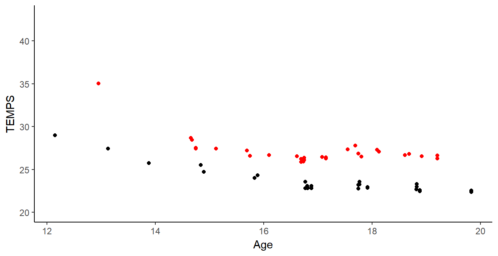

Clustering de courbes : Application à la détection de
Arthur LEROY - MAP5 | IRMES
Servane GEY - MAP5
Benjamin GUEDJ - MODAL INRIA
Jean-François TOUSSAINT - IRMES
Journées de Statistique - 29 mai 2018
Problématique sportive
La détection aujourd’hui :\(\rightarrow\) Meilleurs jeunes + intuition entraineurs
\(\simeq\) 60% des top jeunes à 16 ans ne maintiennent pas leur niveau étant adultes
Philip E. Kearney & Philip R. Hayes (2018) :
\(\simeq\) 10% seulement du top 20 sénior était
-ON BOSSE AVEC SPORTIF IMPORTANT,ECHANGES QU’ILS COMPRENNE ET ETRE PERTINENT -Athlétisme anglais (Homme 9%; Femme 13%) top 20 adulte étaient top 20 en U13 Peu reste top 20 pendant leur évolution : 23% U13-U17; 13% U13-U20;43.3% U15-U17; 22.1% U15-U20; 41.8% U17-U20)
-Athlétisme Italien Environ 60% des tops à 16 ans n’ont pas eu de meilleurs perf adulte.
Les données
Base de données de la Fédération Française de Natation sur l’exhausitivité des performances des licenciés depuis 2002 :
10 000 000 performances
moins de 10 variables informatives
\(\simeq\) X0 000 observations et \(\simeq\) 1 000 individus par épreuves
NETOYAGE BASE
35 EPREUVES
AGE | PERF | CLUB | TEMPS INTER| COMPET
Les données
Base de données de la Fédération Française de Natation sur l’exhausitivité des performances des licenciés depuis 2002 :
10 000 000 performances
moins de 10 variables informatives
\(\simeq\) X0 000 observations et \(\simeq\) 1 000 individus par épreuves

Les données
Base de données de la Fédération Française de Natation sur l’exhausitivité des performances des licenciés depuis 2002 :
10 000 000 performances
moins de 10 variables informatives
\(\simeq\) X0 000 observations et \(\simeq\) 1 000 individus par épreuves
Quelle modélisation ?
Séries temporelles très inhomogènes : comment les comparer ?
Nécessité d’une métrique pertinente mathématiquement et sportivement.
Intérêt sportif pour l’étude des dynamiques de progression .
\(\rightarrow\) Analyse de données fonctionnelles :
Lissage par fonctions de bases communes.
Cohérence avec la nature fonctionnelle de la progression.
Possibilité d’étudier les dérivées des fonctions observées.
- AGE != et NB POINTS !=
FONCTION DE BASES COMMUNES
- PAS ACCORDEON AGE POUR RECALER
pROGRESSION INTRINSEQUEMENT
FONCTIONNELLE ET CONTINUE
- != MATURITéS, uTILITé DERIVéES
Les B-splines
\[\begin{equation*}
f(t) = \sum\limits_{i = 1}^{N}{\alpha_{i} B_{i}^n(t) }
\end{equation*}\]
- FOURIER ONDELETTES PERIODICITE
- SPLINES NATURELLES TROP COEFS
- APPROXIME GRANDE VARIERE FCT
- COMBINAISON LINEAIRE DE
FONCTIONS DE BASE POLYNOMIALES
- PAS UNE INTERPOLATION
- SUPPORT LOCAL DES FONCTIONS
Choix de la base de B-splines
12-20 ans | 20+ observations | 1 noeud par âge
11 B-splines | Ordre 4 | Pénalité par minimisation VCG
Choix de la base de B-splines
12-20 ans | 20+ observations | 1 noeud par âge
11 B-splines | Ordre 4 | Pénalité par minimisation VCG
- NOEUDS DEFINISSE SUPPORT FONCTION
- CERTAIN PARAMETRE PAS OPTIMAUX
- JUSTIF SPORTIVE POUR CERTAINS
- ORDRE 4 POUR DERIVEE REGULIERE
- VALIDATION CROISEE GENERALISEE
- 11 BSPLINES = 7 PTS + ORDRE 4
- FIT MOINDRE CARREE PENALISé
- CLEMENT MIGNON CHMP FRANCE 17ANS
Le clustering sur les coefficients
Les caractéristiques sont contenues dans les coefficients\(\rightarrow\) Méthodes usuelles de clustering
L’algorithme des k-means :
Choix du nombre de centres k
Choix de la position initale des centres
Algorithme itératif à deux étapes
Convergence vers un minimum local
- CARACT FONCTION DS COEFS
- CLUSTER COEFS CLUST FCTS
- CLUSTERING KMEANS PROUVé
CONSISTANT ABRAHAM (2003)
- FAIBLE DIMENSION CAR FLEAU
- K CENTRE INITIAUX
- ALGO A 2 ETAPES
- K ET INITIAUX AVEC CAH
Clustering de courbes et de dérivées
Clustering de courbes et de dérivées
Clustering de courbes et de dérivées
- RECORD MONDE 20,26
- blabla
Clustering de courbes et de dérivées
Clustering de courbes et de dérivées
- RECORD MONDE 20,26
- blabla
Comparaison des clusterings
Score d’adéquation moyen des clusters \(\simeq\) 45%\(\rightarrow\) Information supplémentaire avec la dérivée
- SI QUESTION : 76% VAR EXPLIQUEE
PAR CLUSTERING
- ENVIRON 45% DE SIMILARITé DES
CLUSTERS. AVEC LE HASARD : 20%
- CRITERES DE REGROUPEMENT /=
- DONC INFO EN LIEN MAIS
LA DERIV APPORTE UN +
- ON A TESTE COURBE+DERIV MAIS
C POURRI
Comparaison des clusterings
Score d’adéquation moyen des clusters \(\simeq\) 45%\(\rightarrow\) Information supplémentaire avec la dérivée
- SI QUESTION : 76% VAR EXPLIQUEE
PAR CLUSTERING
- ENVIRON 45% DE SIMILARITé DES
CLUSTERS. AVEC LE HASARD : 20%
- CRITERES DE REGROUPEMENT /=
- DONC INFO EN LIEN MAIS
LA DERIV APPORTE UN +
- ON A TESTE COURBE+DERIV MAIS
C POURRI
Clustering de courbes et de dérivées
- SI QUESTION : 76% VAR EXPLIQUEE
PAR CLUSTERING
- ENVIRON 45% DE SIMILARITé DES
CLUSTERS. AVEC LE HASARD : 20%
- CRITERES DE REGROUPEMENT /=
- DONC INFO EN LIEN MAIS
LA DERIV APPORTE UN +
- ON A TESTE COURBE+DERIV MAIS
C POURRI
Perspectives et références
Modèles de mélange fonctionnels
Modèles mixtes fonctionels
Classification supervisée - moyen terme
Prédiction - long terme
Functional Data Analysis (2005) | J. Ramsay & B.W. Silverman
À retenir pour discuter à la cantine
Meilleur jeune \(\neq\) meilleur adulte
Séries temporelles modélisées par B-splines
Méthodes usuelles sur les coefficients
Clusters performances \(\neq\) clusters dynamiques